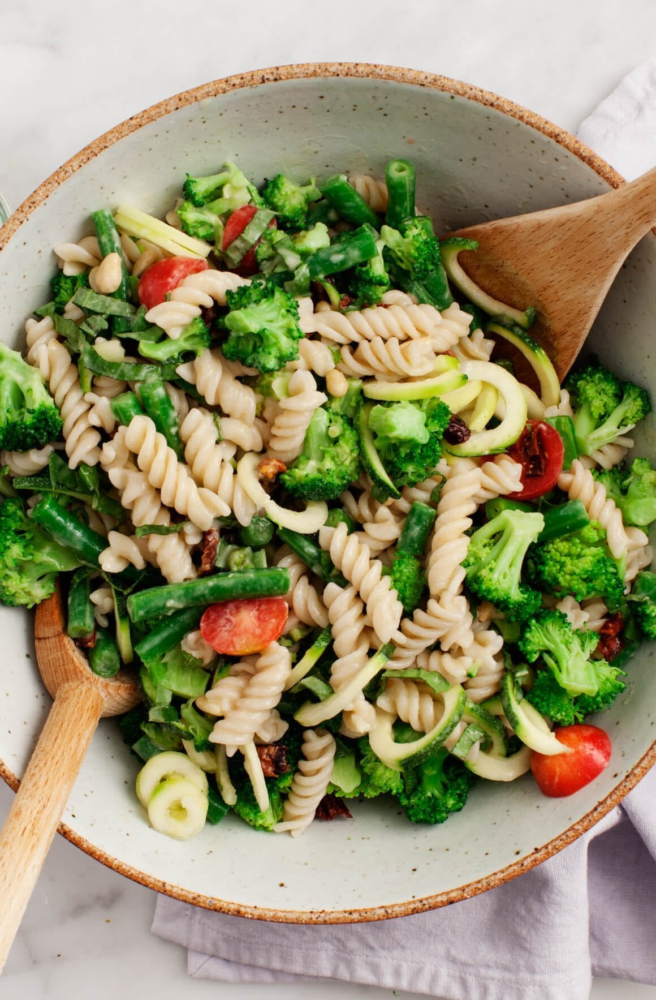

1-Broccoli Tahini Pasta Salad
ingredients:
direction:
In a small bowl, whisk together the olive oil, tahini, lemon juice
, vinegar, garlic, mustard, honey, salt and water. Set aside.
Prepare a large pot of salted boiling water and a large bowl of
ice water. Drop the broccoli and green beans into the boiling
water and blanch for 1-2 minutes, until tender but still bright green.
Remove and immediately immerse in the ice water to stop the cooking processing.
Keep in the ice water long enough to cool completely, about 15
seconds. Then, drain and and place on a kitchen towel to dry.
>
In a large pot of salted boiling water, prepare the pasta according
to the instructions on the package, cooking until all
dente. Drain and rinse with cold water.,
In a large bowl
, combine the broccoli, green beans, zucchini, tomatoes, basil and
the pasta. Drizzle with the dressing and toss.
Season to taste with salt, pepper, and squeezes of lemon, if desired.
Sprinkle with the pine nuts and chill for 15 minutes. Can be stored in the refrigerator for up to 2 days
2-Sesame butterflied chicken:
ingredients:
direction:
Put a griddle pan on a high heat.In a bowl, cover the noodles with boiling kettle water to rehydrate them.
Use a sharp knife to slice into the chicken breasts, then open each one out flat like a book. Rub with 1 teaspoon
of olive oil and a small pinch of salt and black pepper, then griddle for 8 minutes,
or until golden and cooked through, turning halfway.
Trim the spring onions and rattle them through the finest slicer on your food processor, followed by the cabbage,
peas and chilli.
Dress with the juice of 1 lime and the soy sauce. In a small bowl, mix the peanut butter with
the yogurt and the juice of the remaining lime, peel and finely grate in the ginger,
mix again, taste, and season to perfection.
Remove the chicken to a board and slice it.
Drain the noodles, divide between your plates with the chicken, slaw and peanut sauce, mix it all up and tuck on in.
chicken ceaser salad

ingredients:
direction:
Finely grate the lemon zest and Parmesan into a large bowl with the yoghurt, mustard .
Squeeze in half
the lemon juice, add 1 tablespoon of vinegar and 2 tablespoons of olive oil and mix to make your dressing.
Now
you’re going to turn regular salad into a thing of beauty by either taking your time with good knife skills, or ideally,
investing in a mandolin for ease,
elegance and accuracy (use the guard!). Start by peeling and very finely slicing the red onion,
then stir it through the dressing.
Click off and discard any tatty outer leaves from the cauliflower, then very finely slice it.
Finely slice the lettuce by hand and pile both on top of the dressed onion, tossing together only moments before serving.
Put 1 teaspoon of olive oil in a frying pan on a medium heat. Pick the rosemary leaves over the chicken and lightly
season it on both sides, flattening it slightly with the heel of your hand. Cook for 4 minutes on each side, or until golden and
cooked through.
Cube the bread and toast alongside the chicken, moving regularly until evenly golden and gnarly,
removing only when
super-crispy.
Toss the salad together and season to perfection
, slice up the chicken and serve with lemon wedges for squeezing over.
Spicy tuna & cottage cheese jacket
ingredients:
direction:
Preheat the oven to 180C/Gas 4/fan oven 160C. Prick the potato several times with a fork and put it straight onto a shelf in the
hottest part of the oven. Bake for approximately 1 hour, or until it is soft inside.
Mix tuna with chilli, spring onion, tomatoes and
coriander. Split jacket potato and fill with the tuna mix and cottage cheese.
Green club sandwich:
ingredients:
direction:
Toast the bread and spread houmous evenly over one side of each slice. On one slice of bread, spread the
feta cheese, lettuce and tomato. Season with pepper, then cover with another slice.
Spread the
feta cheese, lettuce and tomato, season again and
top with the third slice.